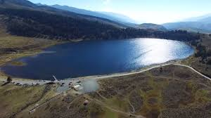
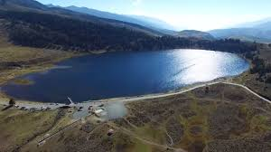
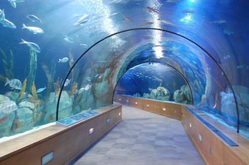

El riesgo es que te quieras quedar


 



Quindío - Corazón de la zona cafetera

Los ecosistemas de agua dulce como los ríos, lagos y humedales ocupan menos del 2% de la superficie terrestre, pero proveen hábitats en los que se presenta biodiversidad de plantas, invertebrados acuáticos y vertebrados como peces y anfibios. Su número está disminuyendo rápidamente por la intervención humana (sobre pesca, minería), la destrucción de hábitats, la alteración física de los cuerpos de agua, el vertimiento de aguas residuales y la polución del aire y el agua.
Desde su inauguración en 1975, el Aquarium de Valencia exhibe el cetáceo de agua dulce más grande del mundo. Se conoce comúnmente como Tonina, boto, bufeo, delfín rosado del Amazonas o delfín del Orinoco. Está distribuida en un hábitat que abarca toda la extensión de la cuenca del Río Amazonas y del Río Orinoco de Venezuela también en Colombia, Ecuador, Perú, Bolivia, Brasil y Guyana. En Venezuela, abundan en el río Apure, Portuguesa, Orinoco, Arauca, Capanaparo y Cinaruco entre otros. Su exhibición tiene como objetivo fundamental brindar una educación ambiental para generar en el público una conciencia para la conservación de esta especie y el resguardo de los ecosistemas donde ellas habitan.

Perfil del Autor
Soy Danny y estudio la carrera de desarrollo web para mejorar mis proyectos y ponerlos en linea.